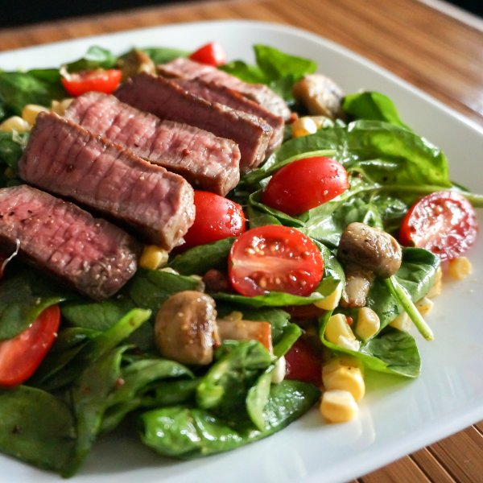

Steak & Spinach Salad with Sauteed Mushrooms, Grape Tomatoes & Corn

Total Time
35 min
Nutrition (Per Serving)
758.8 kcalCalories
36.6 gProtein
17.1 gCarbs
62.7 gFat
Full nutrition table
| Calories | 758.8 kcal |
| Total fat | 62.7 g |
| Saturated fat | 23.9 g |
| Trans fat | 2.2 g |
| Cholesterol | 115.7 mg |
| Sodium | 128.9 mg |
| Carbohydrates | 17.1 g |
| Fiber | 3.4 g |
| Sugars | 7.1 g |
| Protein | 36.6 g |
| Potassium | 1079.9 mg |
| Calcium | 65.4 mg |
| Iron | 5.1 mg |
| Vitamin A | 739 IU |
| Vitamin C | 25 mg |
| Vitamin D | 14.2 IU |
Cookware
Ingredients
- 1 (5 oz) pkgbaby spinach
- 2 earscorn
- 2 clovesgarlic
- 1 pintgrape tomatoes
- 1 ½ lbribeye steak
- ½ lbwhite mushrooms
- black pepper
- Dijon mustard
- extra virgin olive oil
- honey
- red wine vinegar
- salt
- virgin coconut oil
Steps
- Heat a skillet over medium-high heat.
- Wash, dry, and quarter mushrooms. Peel and mince garlic.½ lb white mushrooms
2 cloves garlic - Coat bottom of skillet with oil. Season steak generously with salt and pepper. Place in skillet and cook until desired doneness, 2-5 minutes per side. Transfer to a plate and loosely cover with foil.1 tbsp virgin coconut oil
1 ½ lb ribeye steak
¼ tsp salt
¼ tsp black pepper - Return skillet to stove and reduce heat to medium. Add more oil, garlic, and mushrooms. Season with salt and pepper. Stirring occasionally, cook until mushrooms are golden, 3-4 minutes. Remove from heat and set aside to cool.1 tbsp virgin coconut oil
⅛ tsp salt
⅛ tsp black pepper - In a small bowl, prepare dressing by whisking together oil, vinegar, Dijon, honey, salt, and pepper.6 tbsp extra virgin olive oil
2 tbsp red wine vinegar
2 tsp Dijon mustard
½ tsp honey
¼ tsp salt
¼ tsp black pepper - Remove husks and silks from corn. Hold vertically in the middle of a large bowl and slice kernels off the cob.2 ears corn
- Wash and dry spinach and tomatoes. Halve the tomatoes. Add both to bowl with corn.1 (5 oz) pkg baby spinach
1 small pkg grape tomatoes - Add mushrooms and toss salad.
- Slice steak against the grain.
- To serve, arrange salad on a plate, top with steak slices, and drizzle with dressing. Enjoy!